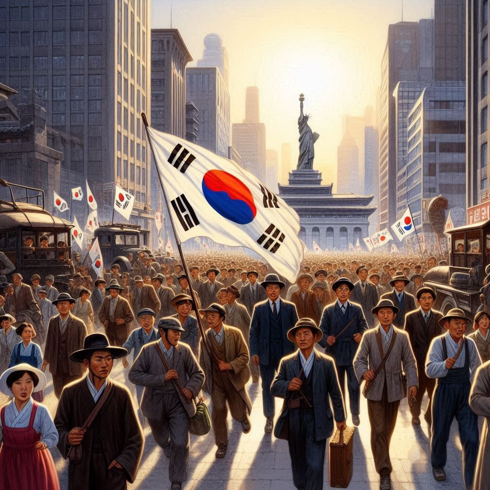

소년이 온다
목차
작가
한강
출판일
2014년
감상평에 대한 AI그림
소년이 온다는 5.18 민주화 운동을 주제로 민주화 항쟁 속 여러 개인들의 이야기를 다룬 소설이다. 책을 읽으면서 참혹한 그 당시의 고통을 간접적으로 느끼며 현대의 민주화 사회를 있게 해준 그들에게 감사하는 마음을 지니고 살아야겠다고 다짐을 할 수 있었다.

감상평에 대한 AI평가
~~~~AI평가~~~~~
✨ 주제 파악이 명확함: 소년이 온다가 5.18 민주화 운동을 다룬 소설이라는 점을 정확하게 서술하였으며, 민주화 운동 속 개인들의 이야기에 초점을 맞춘 점이 좋습니다.
✨ 개인적인 감정 표현: "참혹한 그 당시의 고통을 간접적으로 느끼며"라는 표현을 통해 독자로서의 감정적 반응을 잘 드러내고 있습니다. 또한, "감사하는 마음을 지니고 살아야겠다고 다짐했다"라는 부분에서 책이 준 영향이 분명히 전달됩니다.
✨ 현대 사회와의 연결: 과거의 희생이 현재 민주주의 사회를 만드는 데 기여했음을 인식하고, 이를 통해 독자로서 어떤 태도를 가져야 하는지를 고민한 점이 좋습니다.